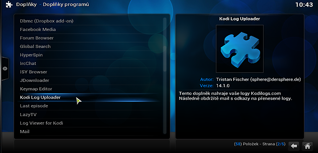
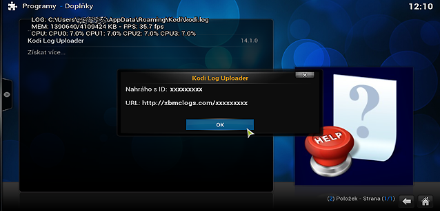

Vítejte na stránkách Návody pro Kodi
Tyto stránky obsahují více či méně aktuální návody pro Kodi (XBMC).
Návody:
Získání logu
Pokud po vás někdo chce debug log (také jako log soubor, kodi.log, xmbc.log, atd.), můžete nainstalovat doplněk, který vám veškerou práci usnadní. Stačí provést pár následujících kroků:
- Instalace doplňku:
- V hlavním menu Kodi zvolte Programy.
- Klikněte na Získat více... na konci seznamu.
- Přibližně uprostřed seznamu naleznete Kodi Log Uploader. 
- Kliknutím na Nainstalovat dokončíte instalaci doplňku.
- Zapnutí ladících informací:
- V hlavním menu Kodi zvolte Systém pro otevření nastavení.
- V okně nastavení zvovu zvolte Systém.
- Pokud v levém seznamu máte položku Ladění, pokračujte následujícím krokem. Pokud položku nevidíte, změnte dole v okně Úroveň nastavení na Standardní a položka Ladění se zobrazí.
- Zvolte položku Ladění a v pravé části okna zapněte Povolit zaznamenávání ladících informací.
- Navození problému/chyby:
- Nahrání logu na web:
- V hlavním menu Kodi zvolte Programy.
- Klikněte na Kodi Log Uploader.
- Pokud je to vaše první spuštění doplňku, zadejte vaši emailovou adresu.
- Doplňek se vás zeptá, zda má nahrát log soubor. Zvolte Ano.
- Po dokončení se zobrazí okno o úspěšném nahrání s ID logu. To si můžete poznamenat pro případ, že nedorazí email s odkazem. 
- Konec:


Pokud chyba vznikla při přehrávání videa, přehrajte toto video. Pokud vyskočilo něco divného při spuštění doplňku, spusťe tento doplňek, atd. Pokud váš problém nevyžaduje vaši akci (např. pokud se projeví ihned při zapnutí Kodi), pokračujte následujícím krokem.

Nyní jste u konce. Stačí otevřít vaši emailovou schránku a zkopírovat odkaz z emailu. Poté ho můžete zaslat člověku, který ho po vás chtěl. Pokud email nedorazil, stačí zaslat poznamenané ID logu. Hotovo! Nyní můžete vypnout ladící informace podle bodu 2.